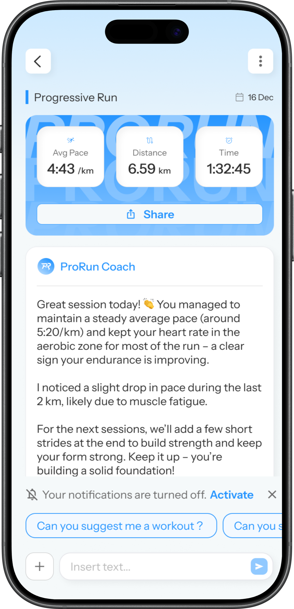
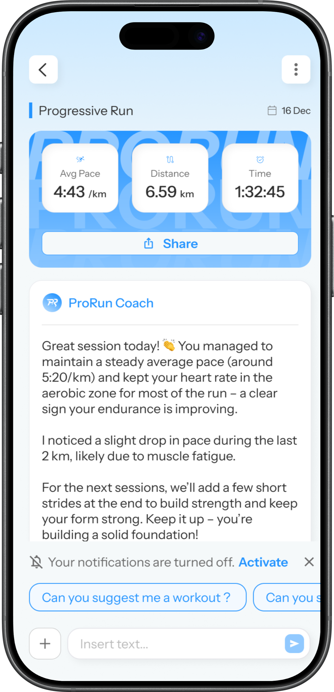

ProRun
Designing an AI-powered running experience that balances motivation, trust and monetization.
The challenge
Most running apps provide metrics and generic plans, but struggle to truly guide users toward a personal goal while maintaining long-term motivation.
- Guide users step by step throughout their journey
- Make AI understandable and trustworthy
- Balance user value and business goals
Onboarding & goal framing
Early iterations caused drop-off due to information overload. The flow was redesigned using progressive disclosure.


Structured training plans
Weekly plans created continuity and reduced decision fatigue.


AI Coach interaction
Conversation design simplified complexity and increased trust. AI was framed as guidance rather than control.
 

Monetization & value perception
Paywall messaging shifted from feature-based to outcome-based framing. Premium access was introduced after value perception.

Impact
- Higher onboarding completion
- Better understanding of AI value
- Stronger perceived balance between UX and business
ProRun demonstrates how emotional engagement, behavioral design and business alignment can coexist in a B2C product.